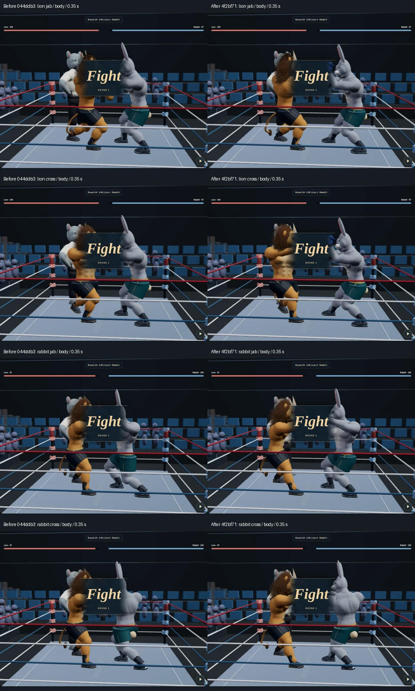

Both fighters, same elapsed time and camera. Left: published baseline 044ddb3. Right: candidate 4f2bf71. Clean punches extend; physical blocks still stop the glove early. These are actual Three.js renders, not concept art.

Method and validation · Measured extension · 60-suite CI · App